Пражский крысарик — не просто собака. Это инопланетянин, поселившийся в вашем доме. Удивительным образом в нём сочетается несочетаемое: кошачье достоинство, собачья преданность и абсолютно человеческий взгляд.
С 2011 года мы изучаем породу, растим щенков и помогаем владельцам. Добро пожаловать в семью Ратлик-блюз.
О породе
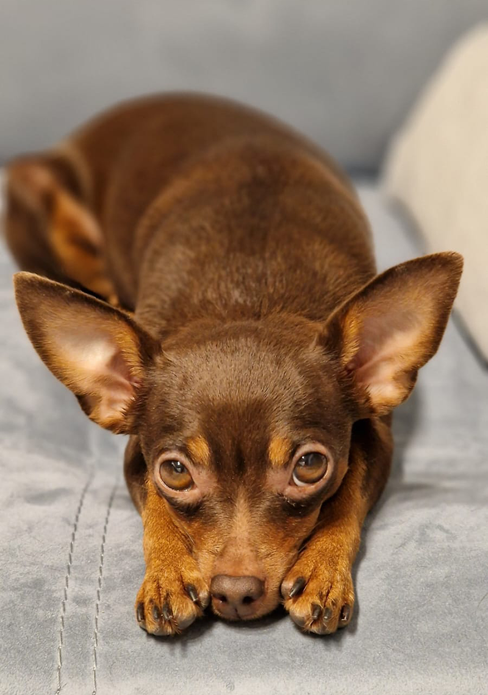
О породе
Стандарт, история, легенды происхождения
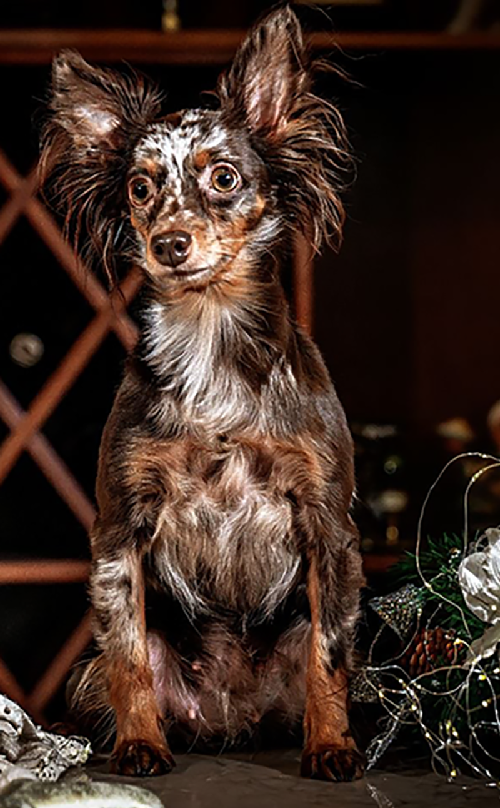
Какие бывают крысарики?
Окрасы, типы шерсти

Так чем же мы отличаемся от тоев?
Головная боль всех судей
Почему именно крысарик? Это собака-компаньон с интеллектом овчарки и сердцем льва. Он не просто питомец — он член семьи, который будет рядом в любой ситуации: на прогулке, в путешествии, на диване или за рабочим столом.
Уход и здоровье
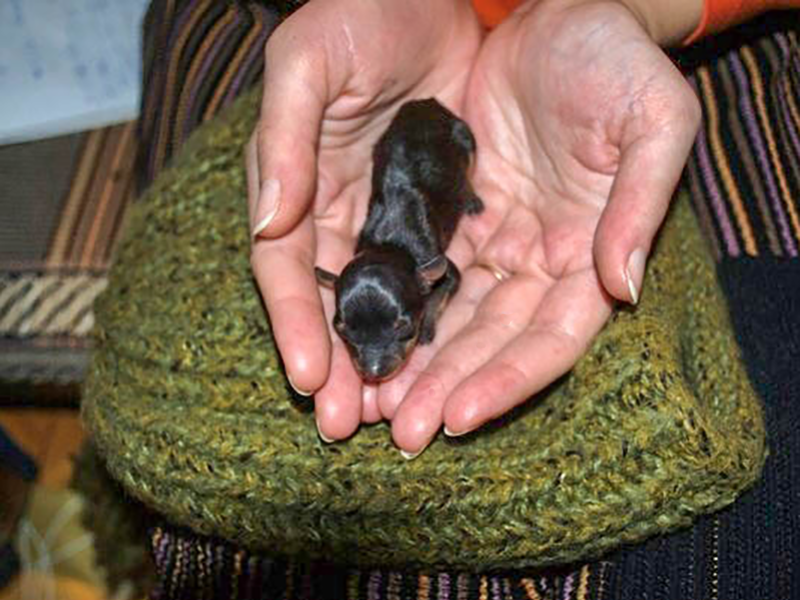
Цена миниатюрности
Риски, связанные с миниатюрным размером
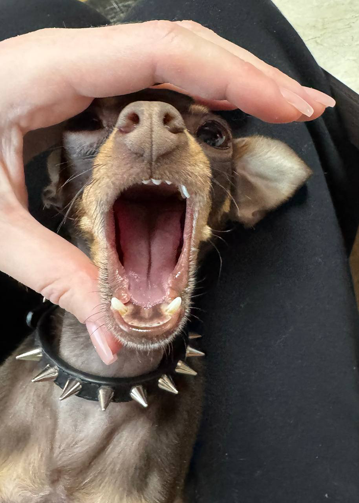
Здоровье и уход
Прививки, зубы, когти, риски заболеваний
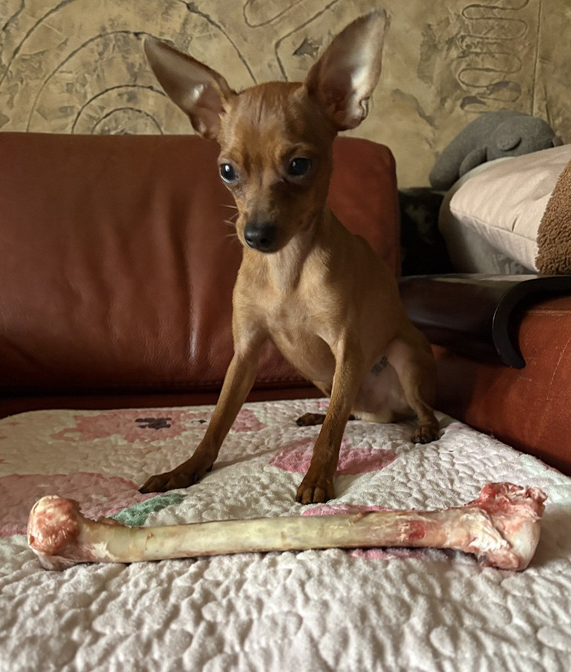
Всё о кормлении
Натуралка, консервы, сушка
Одежда для крысарика
В холодные зимы и просто для красоты
Готовимся к приезду щенка
Что купить до переезда щенка в дом
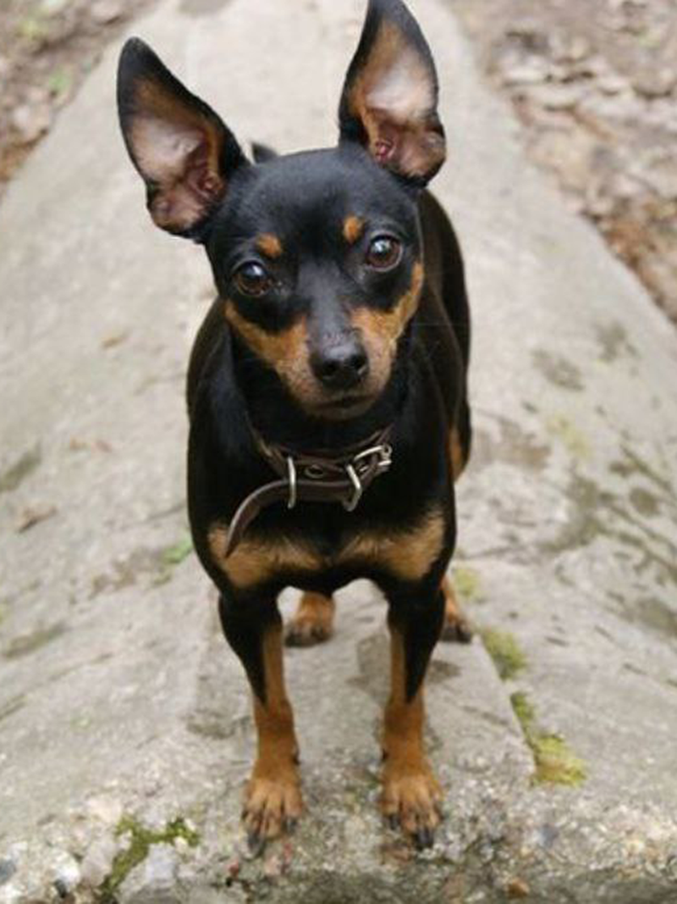
Пелёнка или прогулка?
Приучаем к туалету правильно
Крысарик в доме — это маленький исследователь. Он обязательно проверит каждый угол, познакомится со всеми домочадцами и найдёт самое уютное место для сна. Не удивляйтесь, если этим местом окажется ваша подушка.
Жизнь с крысариком
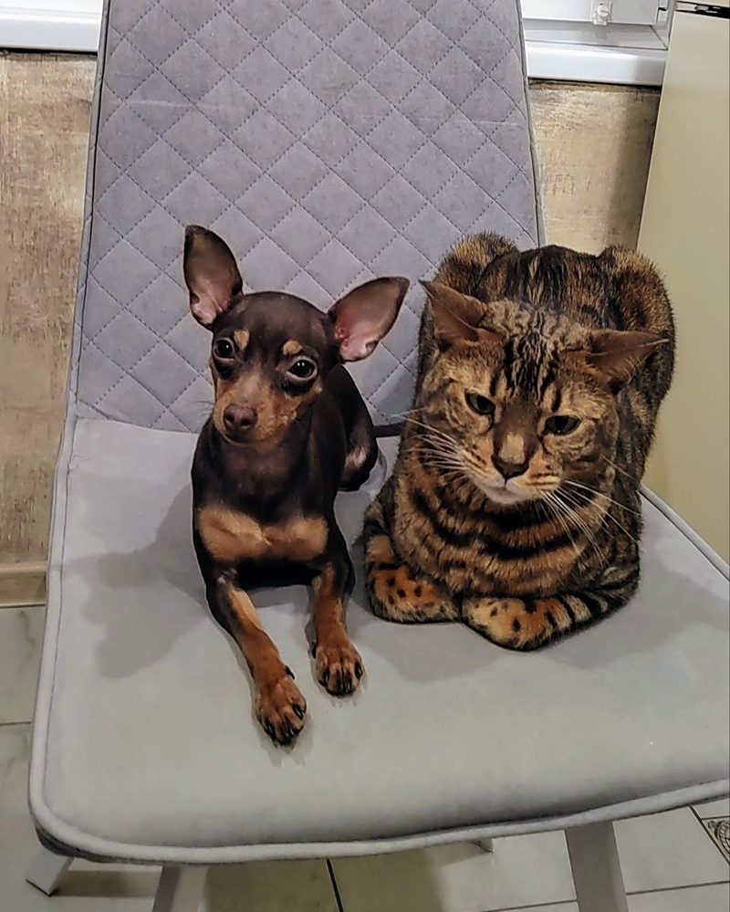
Крысарики, кошки и другие звери
Как уживаются с другими питомцами
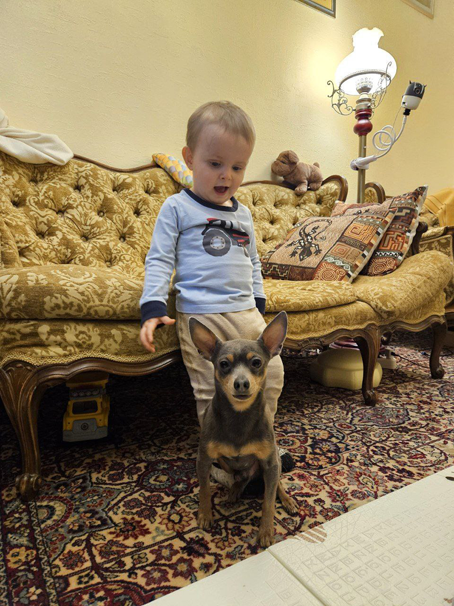
Крысарики и дети
Маленькая собака и маленький человек
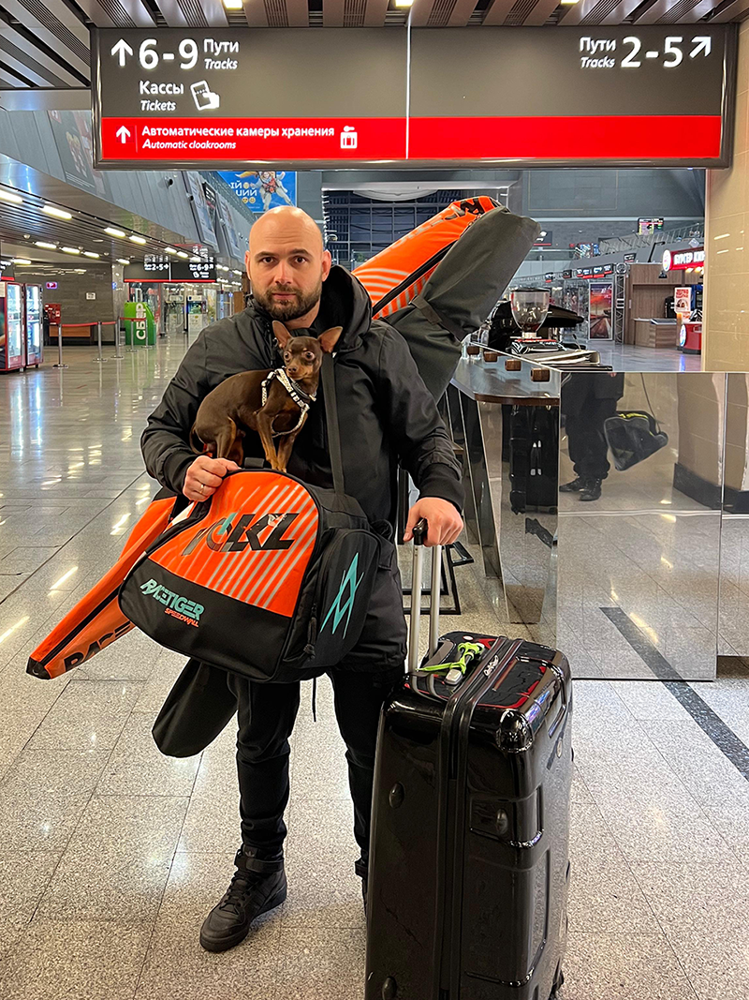
Путешествуем с крысариком
За рубеж и внутри страны

Воспитание и дрессировка
Необходимые навыки и чему можно научить
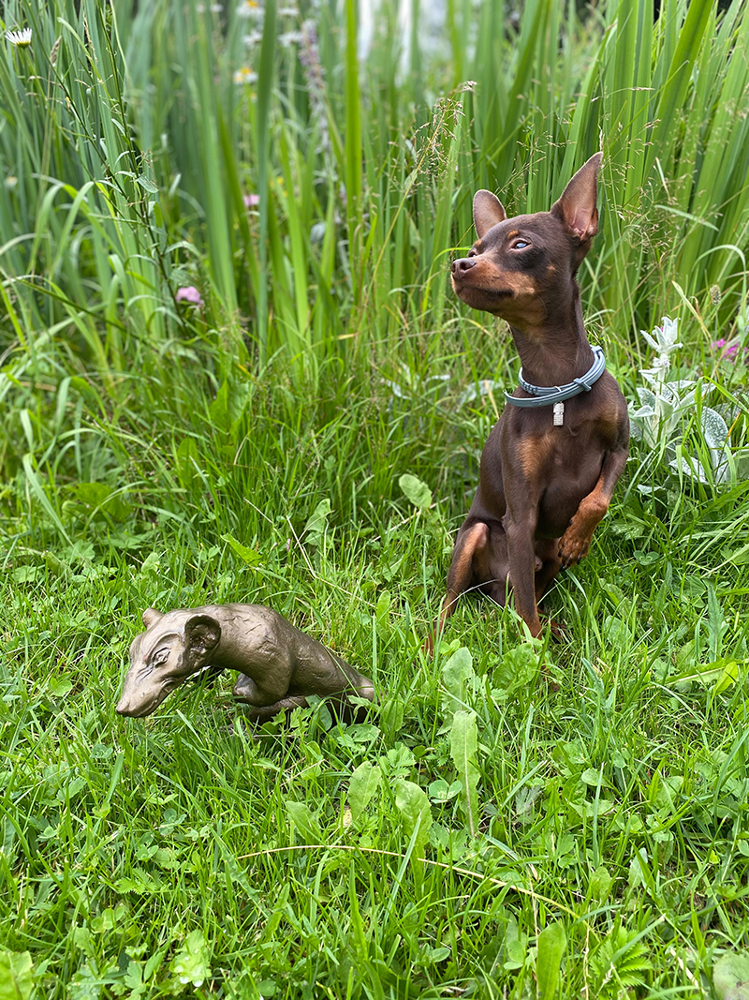
Ловят ли крысарики крыс?
Просто частый вопрос
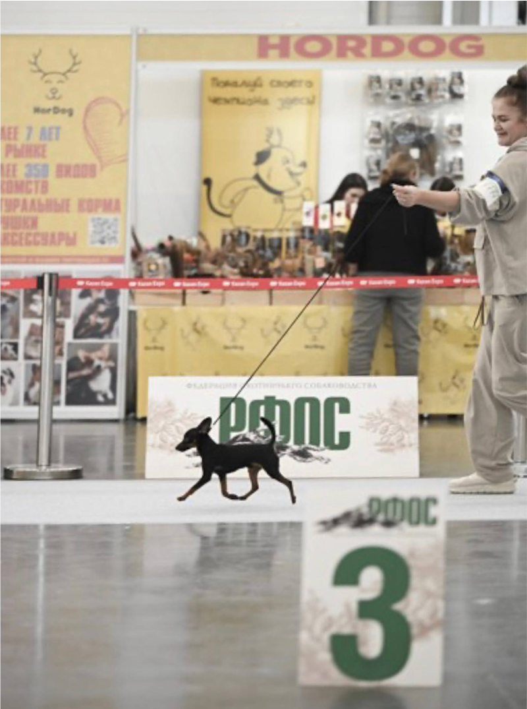
Подготовка к выставке
Дрессировка и документы
Питомник «Ратлик-блюз» основан в 2011 году. Мы не просто занимаемся разведением — мы живём породой. Каждый наш выпускник — это часть семьи, и мы всегда на связи с владельцами.
Бесплатная консультация — первое, с чего мы начинаем знакомство.
Питомник
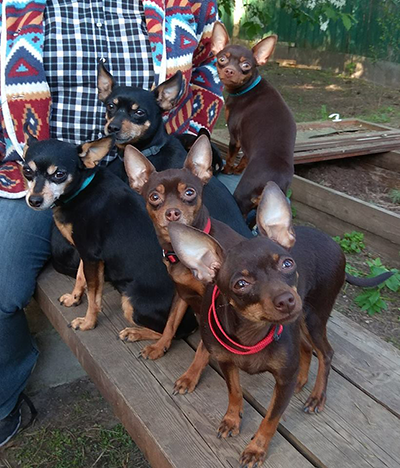
Наш питомник
История, философия, наши собаки
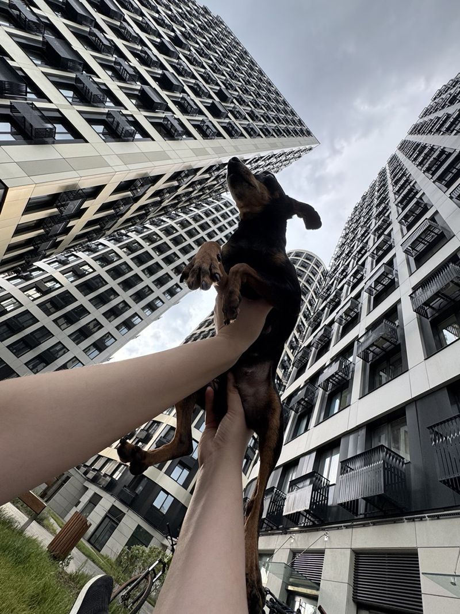
Прогулки с крысариком
Галерея
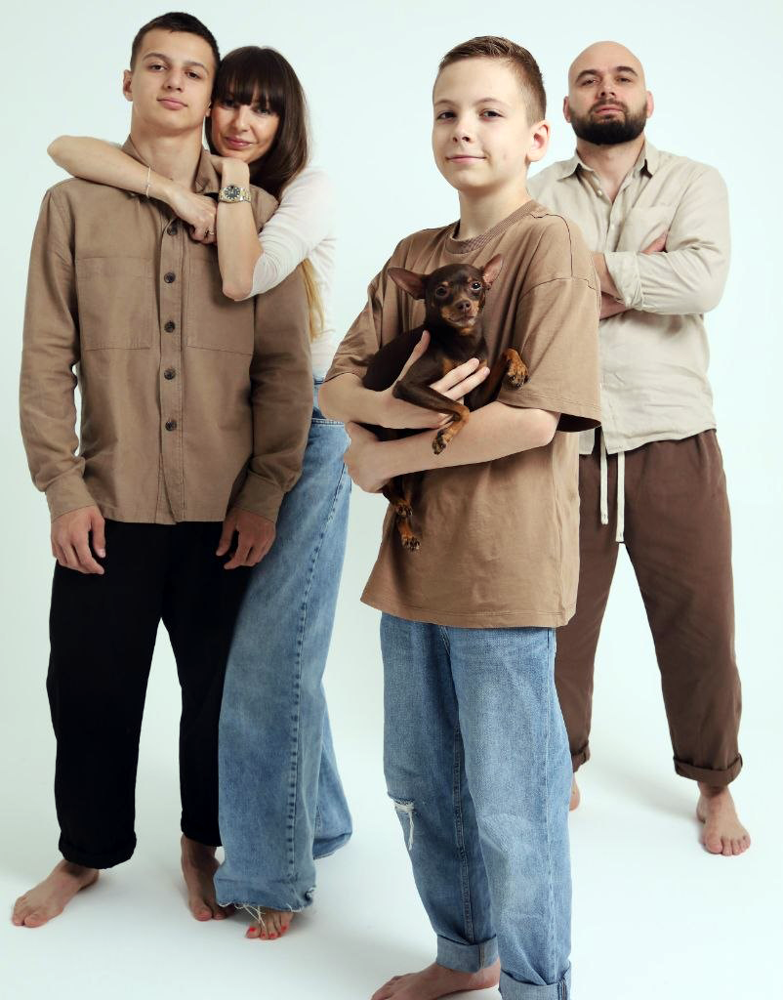
Крысарики и хозяева
Адаптация и поведение в семье, иерархия.
Питомник «Ратлик-блюз»
С 2011 года. Мы не просто занимаемся разведением — мы живём породой. Каждый наш выпускник — это часть семьи, и мы всегда на связи с владельцами.
За эти годы мы накопили огромный опыт в уходе, воспитании и здоровье пражских крысариков. И с радостью делимся им на страницах нашего сайта.
Бесплатная консультация — первое, с чего мы начинаем знакомство.
Задать вопрос
Или забронировать щенка
Пражский крысарик — миниатюрный компаньон с характером
Мы работаем с породой с 2011 года. За это время через наши руки прошли десятки щенков, каждый из которых уехал в новый дом социализированным, здоровым, с полным пакетом документов РКФ и ветеринарным паспортом.
Почему с нами удобно
У нас есть многолетний сплочённый клуб владельцев пражских крысариков в Телеграм, где можно задать любой вопрос 24/7. Если возникает нестандартная ситуация — мы или наши соклубники всегда на связи.
Когда стоит позвонить
Если вы задумываетесь о щенке — просто наберите нас. Мы расскажем о породе, о планах на помёты, ответим на вопросы о характере, уходе и содержании. Бесплатная консультация — первое, с чего мы начинаем знакомство.